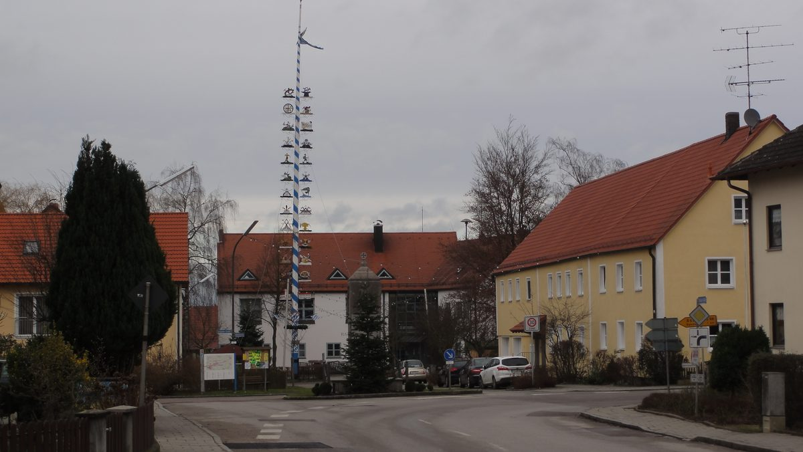

독일 다하우군 피어키르헨 풍력단지, 허가·주민 지지 얻고도 연방 입찰 문턱에 착공 기약 없어

기초자치단체 2곳·협동조합 참여한 풍차 4기 계획…바람 약한 남부 보너스로는 북부와 겨루기 어려워, 지역구 연방하원의원 남부 전용 입찰 요구 공개서한
독일 바이에른주 다하우군에 풍차 4기를 세우려는 피어키르헨 풍력단지가 건축허가와 주민의 폭넓은 지지를 얻고 기초자치단체 2곳과 협동조합 1곳까지 참여했지만, 연방네트워크청(Bundesnetzagentur) 입찰에서 낙찰받을 가망이 없어 착공이 멀어지고 있다. 입찰에서 지원을 따내지 못하면 풍차로 수익을 낼 길도 없기 때문이다. 바이에른처럼 바람이 약한 지역의 풍력은 지금도 전국 입찰에서 보너스를 받지만, 바람이 좋은 북부 부지와 겨루기에는 갈수록 모자라고 그 보너스마저 줄어들 예정이다. 올힝이 지역구인 사회민주당(SPD) 미하엘 슈로디 연방하원의원은 최근 뢰르모스를 찾아 단체장과 단체들의 하소연을 들은 뒤, 재생에너지법(EEG) 개정을 추진 중인 카테리나 라이헤 연방경제장관(기독민주당)에게 남부 전용 입찰을 만들라는 공개서한을 보냈다. 그는 다하우군은 이미 전기가 남아 발전설비를 멈추는 일이 잦은데 개정안이 이때의 보상을 줄이거나 없애는 방향이면 지역이 타격을 받는다며, 개정이 풍력 사업의 수익성과 보급 전체에 미칠 누적 영향을 꼼꼼히 따져야 한다고 요구했다. 슈로디 의원은 바이에른·바덴뷔르템베르크 재생에너지 단체들이 두 주의 풍력 전기 부족분을 2030년까지 약 10GW로 추산한다며 EEG 개정이 이를 메울 기회라고 했으나, 연방경제부의 답변은 알려지지 않았다.
시민에너지 관점
허가, 주민 수용, 지자체와 협동조합 참여까지 갖춘 사업이 입찰 한 번에 멈춰 선 것은, 가장 싼 값만 따지는 경쟁 입찰이 지역이 주인인 발전소를 걸러 내는 구조가 될 수 있음을 보여 준다. 따로 몫을 두면 지원 비용이 오른다는 우려가 있지만, 아일랜드는 재생에너지 지원 경매(RESS)에 지역사회 주도 사업만 따로 겨루는 범주를 두고 낙찰 사업에 지역 기금을 붙여, 경쟁의 틀 안에서도 주민 몫을 지키는 길을 냈다. 주민이 반기는 곳에 세운 풍력은 갈등과 지연을 줄이고, 그 이익이 주민에게 돌아가야 다음 사업의 수용성도 쌓인다. 국내 풍력 경쟁입찰도 낙찰가만 보지 말고 주민·지자체·협동조합이 주인인 사업을 따로 평가하는 몫을 마련해야 한다.
출처: Süddeutsche Zeitung 2026-10-27 Alexandra Vettori 원문 보기
ドイツ・ダッハウ郡のフィアキルヒェン風力発電所、許可と住民の支持を得ても連邦入札の壁で着工のめど立たず
基礎自治体2つと協同組合が参加する風車4基の計画…風の弱い南部へのボーナスでは北部に太刀打ちできず、地元の連邦議会議員が南部専用入札を求める公開書簡
ドイツ・バイエルン州ダッハウ郡で風車4基を建てる計画のフィアキルヒェン風力発電所は、建築許可と住民の幅広い支持を得て、基礎自治体2つと協同組合1つも参加しているが、連邦ネットワーク庁（Bundesnetzagentur）の入札で落札できる見込みがなく、着工が遠のいている。入札で支援を勝ち取れなければ、風車で収益を上げる道もないためだ。バイエルンのように風の弱い地域の風力は今も全国入札でボーナスを受けているが、風の良い北部の立地と競うには次第に足りなくなっており、そのボーナスさえ引き下げられる予定だ。オルヒングを地盤とする社会民主党（SPD）のミヒャエル・シュローディ連邦議会議員は最近レールモースを訪れて首長や団体の訴えを聞いた後、再生可能エネルギー法（EEG）の改正を進めるカテリーナ・ライヒェ連邦経済相（キリスト教民主同盟）に、南部専用の入札を設けるよう求める公開書簡を送った。同議員は、ダッハウ郡ではすでに電気が余って発電設備を止めることが多く、改正案がその際の補償を減らしたりなくしたりする方向なら地域が打撃を受けるとして、改正が風力事業の採算と普及全体に及ぼす累積的な影響を慎重に評価すべきだと求めた。シュローディ議員は、バイエルン・バーデン＝ヴュルテンベルク両州の再生可能エネルギー団体が2030年までの両州の風力電力の不足分を約10GWと見積もっているとして、EEG改正がそれを埋める機会だと述べたが、連邦経済省の回答は明らかになっていない。
市民エネルギーの視点
許可、住民の受け入れ、自治体と協同組合の参加まで備えた事業が一度の入札で止まったことは、最も安い価格だけを見る競争入札が、地域が持ち主の発電所をふるい落とす仕組みになりうることを示している。別枠を設ければ支援コストが上がるとの懸念もあるが、アイルランドは再生可能エネルギー支援入札（RESS）に地域社会主導の事業だけが競う区分を設け、落札事業に地域基金を義務づけることで、競争の枠組みの中でも住民の取り分を守る道を開いた。住民が歓迎する場所に建てた風力は対立と遅れを減らし、その利益が住民に戻ってこそ次の事業の受容性も積み上がる。韓国の風力競争入札も落札価格だけを見ず、住民・自治体・協同組合が持ち主の事業を別に評価する枠を設けるべきだ。
出典: 南ドイツ新聞 2026-10-27 Alexandra Vettori 原文を読む
德国达豪县菲尔基兴风电场获许可和居民支持，却卡在联邦招标门槛、开工遥遥无期
两个基层市镇和一家合作社参与的4台风机项目…风力较弱的南部所获加分难以与北部竞争，当地联邦议员发公开信要求设立南部专场招标
德国巴伐利亚州达豪县计划建设4台风机的菲尔基兴风电场，已取得建设许可和居民的广泛支持，两个基层市镇和一家合作社也已参与，但由于在联邦网络局（Bundesnetzagentur）的招标中没有中标希望，开工日期越来越远。拿不到招标支持，风机就没有盈利的途径。像巴伐利亚这样风力较弱地区的风电目前在全国招标中可获得加分，但要与风况更好的北部场址竞争已越来越不够，而且这项加分还将下调。选区在奥尔兴的社会民主党（SPD）联邦议员米夏埃尔·施罗迪近日到访勒尔莫斯，听取了地方首长和团体的诉求，随后致公开信给正在推动修订《可再生能源法》（EEG）的联邦经济部长卡特琳娜·赖歇（基民盟），要求为南部设立专场招标。他指出，达豪县已经常因电力过剩而停运发电设施，若修法方向是削减甚至取消这种情况下的补偿，当地将受到冲击，并要求认真评估修法对风电项目盈利能力和整体推广的累积影响。施罗迪援引巴伐利亚和巴登-符腾堡两州可再生能源团体的估算称，到2030年两州风电缺口约为10GW，EEG修订是填补缺口的机会；联邦经济部的回应尚不得而知。
市民能源视角
一个具备许可、居民接受以及市镇和合作社参与的项目，却因一次招标就停滞不前，说明只看最低价的竞争招标可能成为把本地所有的电站筛出局的机制。有人担心单独划出份额会抬高补贴成本，但爱尔兰在可再生能源支持拍卖（RESS）中设立了只供社区主导项目相互竞争的类别，并要求中标项目设立社区基金，在竞争框架内也守住了居民的份额。建在居民欢迎之处的风电能减少冲突和拖延，收益回到居民手中，下一个项目的接受度才能积累起来。韩国的风电竞争招标也不应只看中标价格，而应为居民、地方政府和合作社所有的项目设立单独评估的份额。
来源: 南德意志报 2026-10-27 Alexandra Vettori 查看原文
Germany's Vierkirchen wind farm in Dachau district has permits and local support but no start date after hitting the federal auction wall
Four-turbine plan backed by two municipalities and a cooperative; bonus for the less windy south no longer enough to compete with the north, and the local member of the Bundestag calls in an open letter for separate southern auctions
The Vierkirchen wind farm, a plan for four turbines in the Dachau district of Bavaria, has a building permit, broad support from residents and the participation of two municipalities and a cooperative, yet its construction start is slipping away because it has no prospect of winning an award in the Federal Network Agency (Bundesnetzagentur) auctions. Without an award, there is no way for the turbines to earn money. Wind projects in less windy regions such as Bavaria already receive a bonus in the nationwide auctions, but it is less and less often enough to compete with higher-yield sites in the north, and it is set to shrink. Michael Schrodi, the Social Democratic (SPD) member of the Bundestag for the Olching constituency, recently visited Röhrmoos to hear complaints from mayors and associations, then wrote an open letter to Federal Economy Minister Katherina Reiche (CDU), whose ministry is revising the Renewable Energy Sources Act (EEG), calling for separate auctions for the south. He said the Dachau area already sees frequent shutdowns of plants because of surplus generation, so plans to reduce or scrap compensation for such curtailment would hit it hard, and asked that the cumulative effects of the changes on the economics of wind projects and on expansion as a whole be carefully assessed. Schrodi cited renewable energy associations in Bavaria and Baden-Württemberg that put the two states' wind power gap at around 10GW by 2030 and called the EEG revision a chance to close it; no response from the economy ministry has been reported.
Citizen Energy View
That a project with permits, local acceptance and the involvement of municipalities and a cooperative can be halted by a single auction shows that competitive tenders judged only on the lowest price can end up filtering out locally owned plants. There are worries that a separate share would raise support costs, but Ireland set up a category in its Renewable Electricity Support Scheme (RESS) auctions in which only community-led projects compete and attached community funds to winning projects, opening a way to protect residents' share within a competitive framework. Wind farms built where residents welcome them cut conflict and delay, and only when the benefits return to residents does acceptance build for the next project. Korea's competitive wind auctions, too, should not look only at the winning price but set aside a share in which projects owned by residents, local governments and cooperatives are assessed separately.
Source: Süddeutsche Zeitung 2026-10-27 Alexandra Vettori Read the original